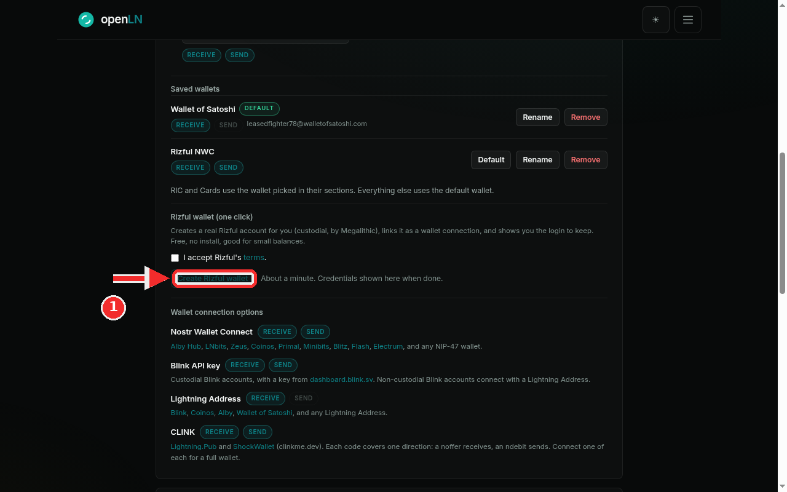
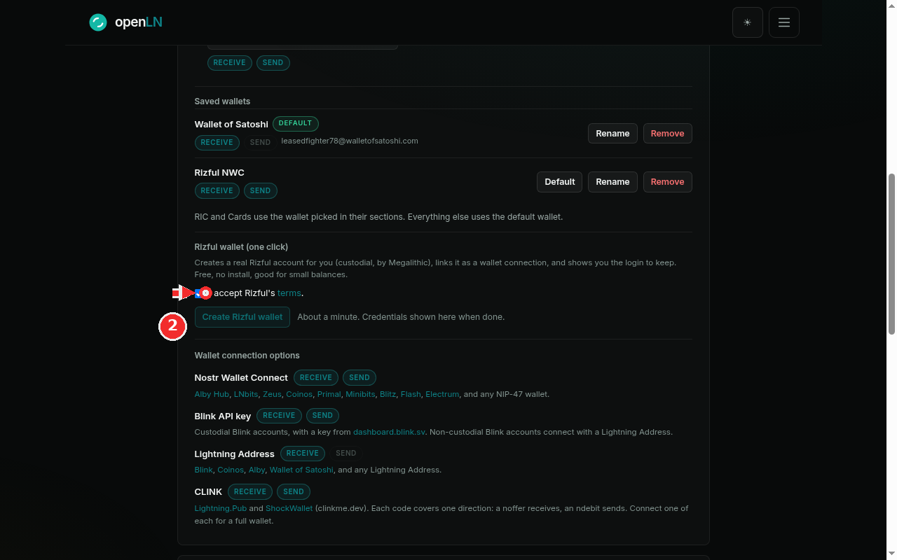
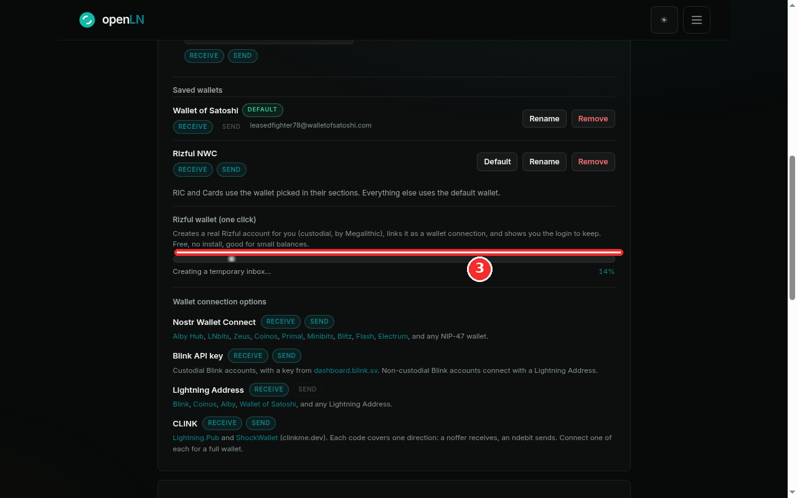
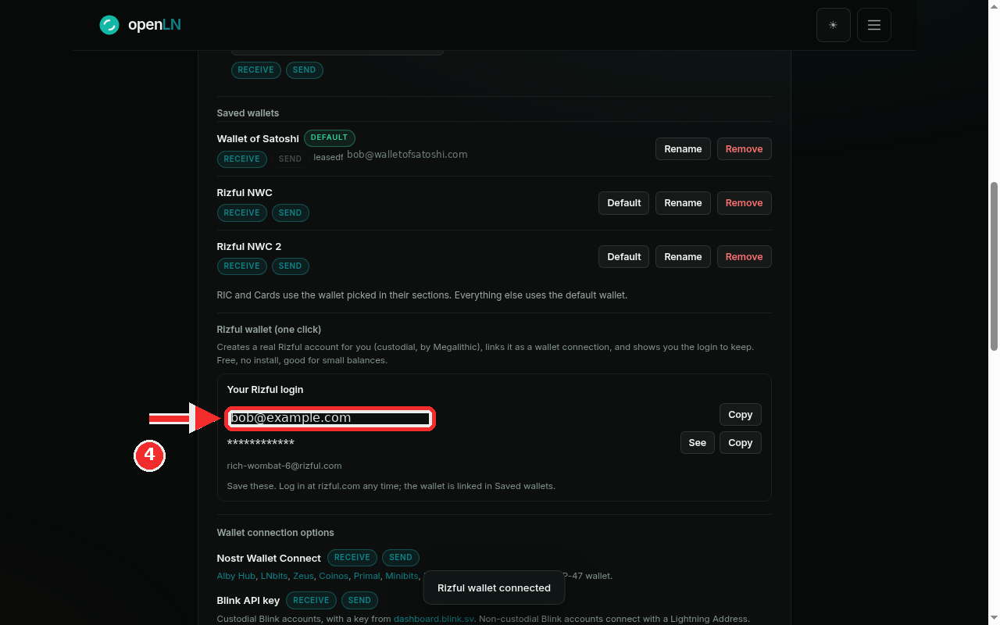
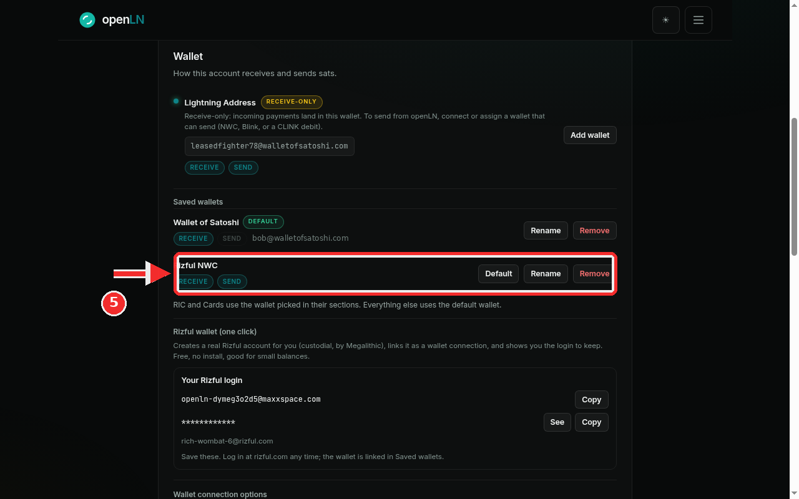

How to create a Rizful wallet in one click
This guide walks you through the one-click Rizful wallet: openLN creates a real Rizful account for you, links it to your openLN account as a wallet connection, and shows you the login to keep. Rizful is a hosted Lightning wallet operated by Megalithic. The wallet is custodial, which means Megalithic is the custodian and holds the funds, while the login belongs to you. It is free, there is nothing to install, it suits small balances, and the whole thing takes about a minute.
- You are signed in to your openLN account (any device, phone or computer).
- You do not need a Rizful account, and there is nothing to install: openLN creates the account for you.
- You are ready to accept Rizful's terms. The terms line in the card links to rizful.com/terms, so you can read them before you start.
- Nothing is charged during setup and no funds move.
Open Settings and find the Rizful wallet (one click) card
Go to Settings and find the Wallet card, the one that starts with "How this account receives and sends sats". Scroll down past Saved wallets and you will see a block titled Rizful wallet (one click). Its description tells you exactly what it does: it creates a real Rizful account for you (custodial, by Megalithic), links it as a wallet connection, and shows you the login to keep. Free, no install, good for small balances.
Underneath the description is the button this step is about: Create Rizful wallet, with the line "About a minute. Credentials shown here when done." beside it. The button is dimmed at this point, and that is on purpose: it only becomes active after you accept Rizful's terms, which is the next step.

Tick "I accept Rizful's terms"
Above the button is a checkbox that reads I accept Rizful's terms. The word "terms" is a link to rizful.com/terms, so open it first if you want to see what you are agreeing to.
Tick the box. This is the gate the card waits behind: openLN creates the Rizful account for you only after you accept Rizful's terms, and the Create Rizful wallet button stays disabled while the box is empty. The moment you tick it, the button comes alive. Press it and the one-click run starts.

Watch the progress bar while the wallet is built
The card switches to a live progress bar and starts registering the account for you. There is nothing to fill in; openLN walks the whole registration and the bar names each stage as it goes: creating a temporary inbox, opening the Rizful signup, passing the bot check, creating your account, waiting for and verifying the email, fetching the one-time code, and finally linking the wallet over NWC. The screenshot catches it early, at Creating a temporary inbox... with 14% shown on the right.
This takes about a minute. Keep the tab open and let it finish; the card checks on the run by itself, and the page refreshes when the wallet lands. When it is done you will see a "Rizful wallet connected" message.

Done: save your Rizful login
The card now shows a box titled Your Rizful login. It holds the two things that are yours to keep: the email address of the account (the example shows job@example.com) and the password, which stays masked behind asterisks until you ask for it. Press the See button to reveal the password, and press Copy beside either line to copy the email or the password without revealing it.
Save both, ideally somewhere you will still have them in a year. This email and this password are your login at rizful.com, and they work there at any time, whether you are using openLN or not; sign in with them whenever you want to take the wallet over. Treat the password like the wallet itself: anyone who has it can log in.
Below the two lines the card also shows the wallet handle, for example rich-wombat-6@rizful.com. That is the wallet's Lightning Address, the address it can receive payments at.

Find it in Saved wallets as Rizful NWC
Look back up at Saved wallets. The wallet is listed there as Rizful NWC, tagged RECEIVE and SEND. Both tags lit means it is a full wallet: openLN can receive payments into Rizful and send sats from it when you ask.
From here it works like any other saved wallet. Press Rename to give it a name you will recognize, press Default to make it the wallet everything uses (the RIC and Cards keep using whatever is picked in their own sections), or press Remove to take it off the list. The manage wallets guide walks through these controls; remember that removing the row does not close the Rizful account, which stays yours with the same login.

- If a one-click run fails, you have a fallback. The card shows the error and tells you that you can create a wallet yourself in about a minute at rizful.com and connect it here, with a Try again button under it. The account stays yours either way: openLN only ever creates it in your name, and the login it hands you works at rizful.com regardless of what openLN shows.
- Custody, plainly. openLN never holds your sats. This wallet is custodial: Rizful, operated by Megalithic, is the custodian and holds the funds. openLN keeps the connection that lets your account receive and send through it, and nothing more.
- One run at a time. Pressing Create again while a run is in flight answers "A Rizful setup is already running." and changes nothing. Right after a success, a fresh run is held back for a few minutes while the new wallet is still linked.
- The login survives everything. If you remove Rizful NWC from Saved wallets later, the Rizful account and this login stay yours, and the card below offers Re-link this wallet to put the same wallet back on the list without creating anything new.